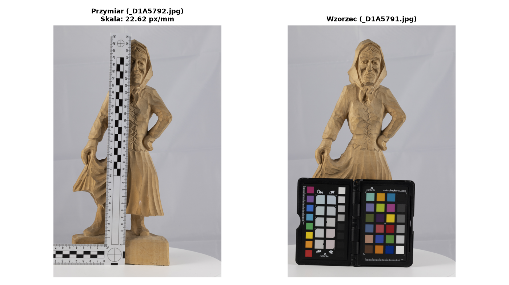
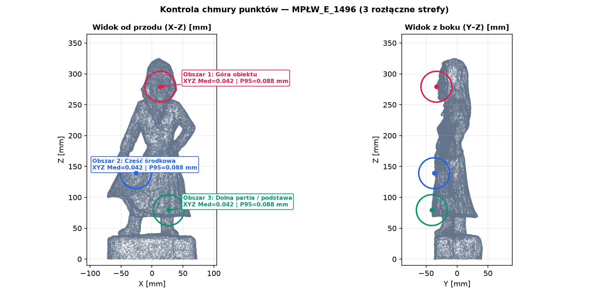
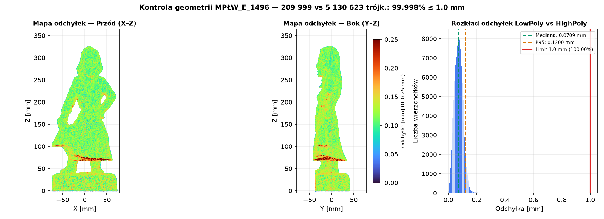
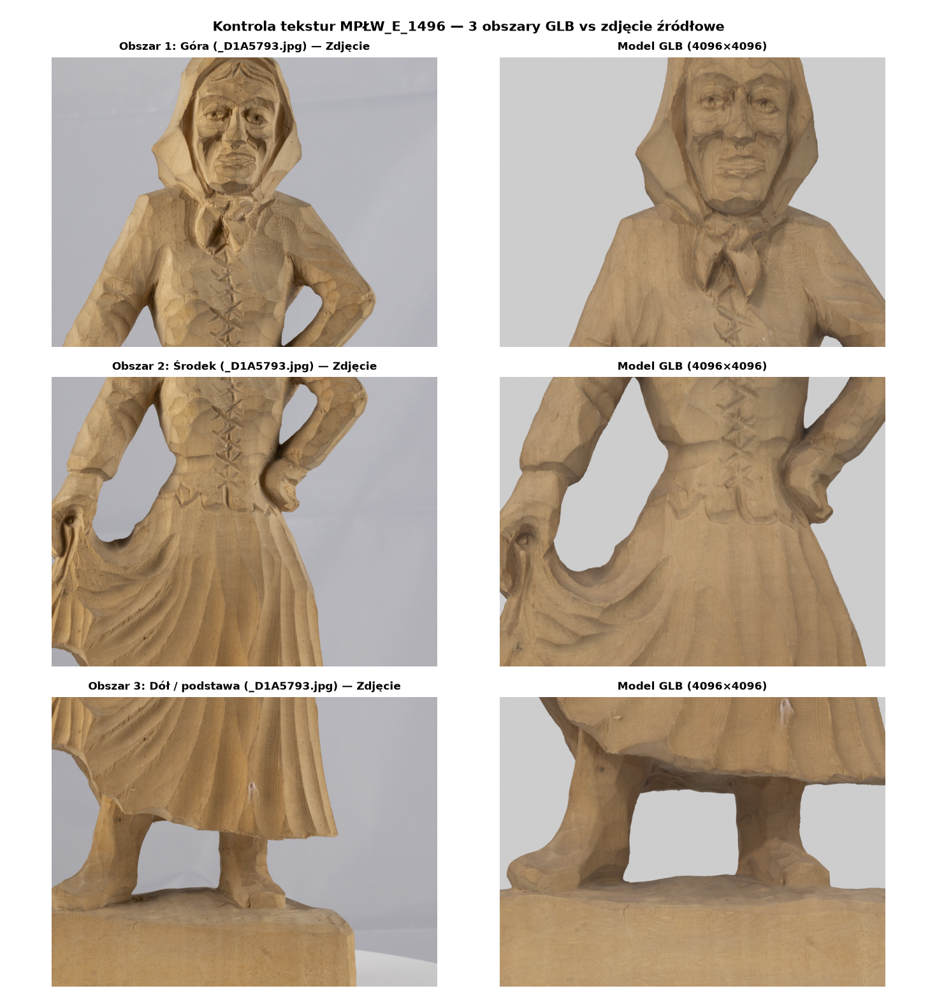
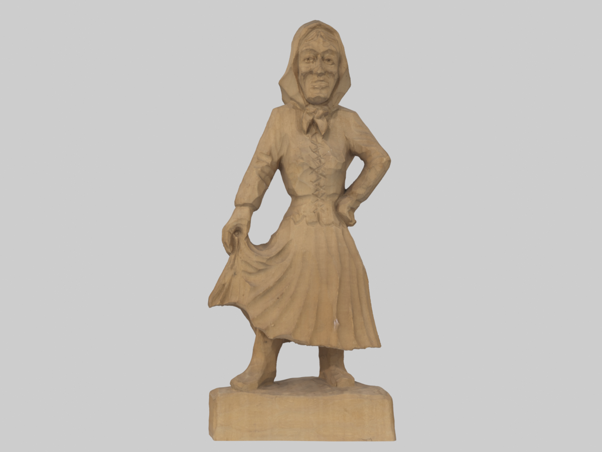
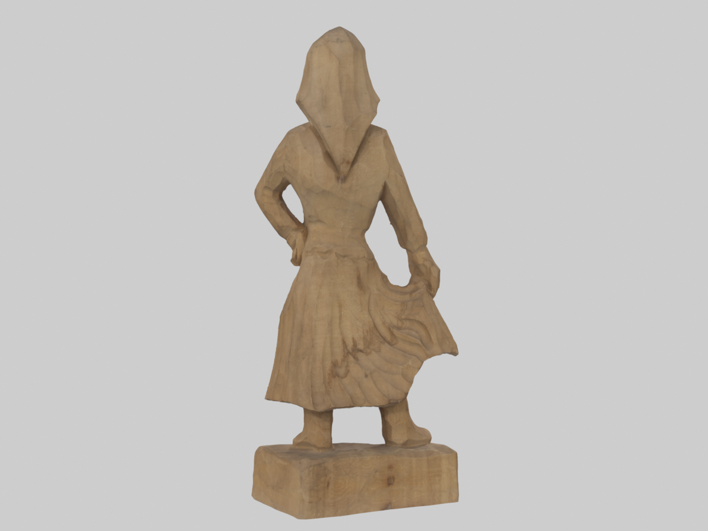

Raport Kontroli Jakości (QA) i Metadane — MPŁW_E_1496
Kategoria: Rzeźba drewniana (kategoria 1A — zwarta) ZATWIERDZONO — WSZYSTKIE WYMOGI SPEŁNIONE
1. Metadane techniczne
| Numer inwentarzowy | MPŁW_E_1496 (Rzeźba drewniana (kategoria 1A — zwarta)) |
|---|---|
| Metoda i sprzęt | Fotogrametria (Canon EOS R5 C + EF100mm Macro); 382 / 399 dopasowanych kadrów |
| Chmura punktów | 12 000 000 pkt XYZRGB (448,8 MB) · Web PLY: 550 000 pkt (7,87 MB, med. 0,2385 mm) |
| Model archiwalny High Poly | 5 130 623 trójkątów / 2 565 308 wierzchołków (OBJ 0,55 GB + PNG 8192×8192) |
| Model użytkowy Low Poly | 209 999 trójkątów / 104 996 wierzchołków (GLB: 8,18 MB ≤ 50 MB + JPG 4096×4096) |
| Eksport geometrii STL | 5 143 439 trójkątów (245,3 MB), jednostka: metr (m) |
| Skalowanie i wymiary | 325,22 × 144,84 × 81,47 mm (kalibracja: _D1A5792.jpg, 22,62 px/mm) |
| Uwagi o powierzchni | Wyrównano płaszczyznę spodu podstawy (Z = 0.80 mm) na wersji edycyjnej HighPoly ≤ 5M.; Domknięto spód podstawy płaską ścianką (Z = 0) z proceduralną fakturą słojów drewna dobraną kolorystycznie do krawędzi podstawy. |
2. Kontrola wymiarów i skali

Rys. 1. Zdjęcia kalibracyjne i weryfikacja wymiarów (325,22 × 144,84 × 81,47 mm).
3. Kontrola chmury punktów (3 rozłączne obszary)
| Obszar | Punkty (XYZ / PLY) | Mediana XYZ (PLY) | P95 XYZ (PLY) | Ocena |
|---|---|---|---|---|
| Obszar 1: Góra obiektu | 266 009 / 12 792 | 0,0422 mm (0,2328 mm) | 0,0882 mm (0,4001 mm) | PASS |
| Obszar 2: Część środkowa | 317 032 / 14 507 | 0,0422 mm (0,2403 mm) | 0,0883 mm (0,4131 mm) | PASS |
| Obszar 3: Dolna partia / podstawa | 284 831 / 12 727 | 0,0422 mm (0,2424 mm) | 0,0882 mm (0,4166 mm) | PASS |

Rys. 2. Lokalizacja trzech rozłącznych obszarów pomiarowych chmury punktów.
4. Kontrola geometrii (Low Poly vs High Poly)
| Mediana | Średnia | P95 | P99 | Maksimum | Powierzchnia ≤ 1,0 mm |
|---|---|---|---|---|---|
| 0,0709 mm | 0,0718 mm | 0,1200 mm | 0,1454 mm | 1,5453 mm | 99,998% (PASS) |

Rys. 3. Rozkład odchyłek Low Poly (209 999 trójk.) względem High Poly (5 130 623 trójk.).
5. Kontrola tekstur

Rys. 4. Zestawienie trzech wycinków fotografii źródłowych z renderami finalnego modelu GLB.
6. Widoki kontrolne GLB

Finalny GLB — przód

Finalny GLB — tył